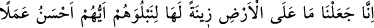
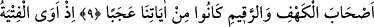
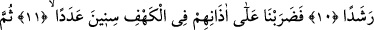
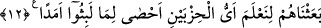

RABBİMİZ!
BİZE BİR KURTULUŞ
YOLU HAZIRLA!
7. Biz, insanların hangisinin daha güzel amel edeceğini deneyelim diye
yeryüzündeki her şeyi dünyanın kendine mahsus bir ziynet yaptık.
8. (Bununla beraber) biz mutlaka oradaki her şeyi kupkuru bir toprak yapacağız.
9. (Rasûlüm)! Yoksa sen, bizim âyetlerimizden (sadece) Kehf ve Rakîm
sahiplerinin ibrete şâyan olduklarını mı sandın?
10. O (yiğit) gençler mağaraya sığınmışlar ve: Rabbimiz! Bize tarafından rahmet
ver ve bize, (şu) durumumuzdan bir kurtuluş yolu hazırla! demişlerdi.
11. Bunun üzerine biz de o mağarada onların kulaklarına nice yıllar perde koyduk
(uykuya daldırdık.)
12. Sonra da iki guruptan hangisinin kaldıkları müddeti daha iyi hesap edeceğini
bilelim diye onları uyandırdık.
“Biz, insanların” Allah’ı ve rızâsını taleb ederek dünyayı terk ve nefsinin arzularına
muhâlefet konusunda “hangisinin daha güzel amel edeceğini” Allah’tan ve O’nun
katındaki bâkî kalacak olan amellerden yüz çevirme, dünyaya ve dünyada bulunan fâsid
ve fânî şeylere yönelme konusunda hangisinin daha kötü amel edeceğini “deneyelim
diye yeryüzündeki her şeyi” canlıları, bitkileri ve madenleri “dünyanın kendine” ve
ehline “mahsus bir ziynet yaptık.” et-Te’vîlâtü’n-Necmiyye’de şöyle der: “Dünyayı ve
şehvetlerini insanların tabiatlarına uygun olarak süsledik ve onu bir imtihan mahalli
kıldık.”
Kâşifî şöyle der: “Âyetteki ‘yeryüzündeki her şey’den maksad peygamberler, âlimler
veya Kur’an hâfızlarıdır. Çünkü yeryüzünün süsü/ziyneti onlardır. Bir topluluk
yeryüzünün süsü Allah adamlarıdır. Bu yüzden âlemin kıyâmı onların vücûduna